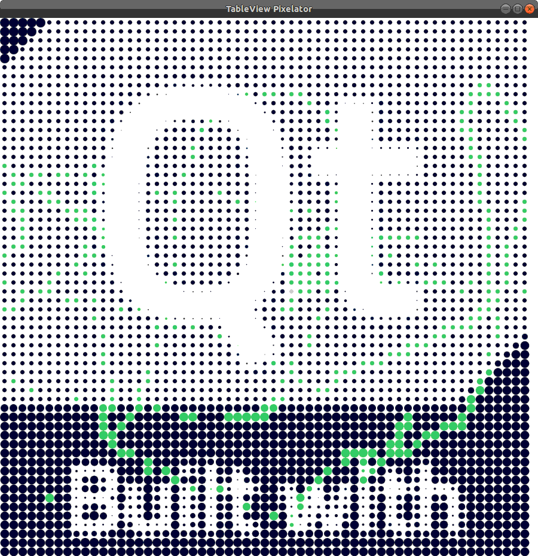

Qt Quick TableViews examples - Pixelator
The Pixelator example shows how a QML TableView and a delegate can be used for custom table models.

Running the Example
To run the example from Qt Creator, open the Welcome mode and select the example from Examples. For more information, visit Building and Running an Example.
class ImageModel : public QAbstractTableModel { Q_OBJECT Q_PROPERTY(QString source READ source WRITE setSource NOTIFY sourceChanged) public: ImageModel(QObject *parent = nullptr); QString source() const; void setSource(const QString &source); int rowCount(const QModelIndex &parent = QModelIndex()) const override; int columnCount(const QModelIndex &parent = QModelIndex()) const override; QVariant data(const QModelIndex &index, int role = Qt::DisplayRole) const override; QVariant headerData(int /* section */, Qt::Orientation /* orientation */, int role) const override; signals: void sourceChanged(); private: QString m_source; QImage m_image; };
We only require a simple, read-only table model. Thus, we need to implement functions to indicate the dimensions of the image and supply data to the TableView. We use the Qt Property System and a source property as QString to set the path of the image.
void ImageModel::setSource(const QString &source) { if (m_source == source) return; beginResetModel(); m_source = source; m_image.load(m_source); endResetModel(); }
Here we load the image when the source path is set. When the source path has changed, we need to call beginResetModel() before. After the image has been loaded, we need to call endResetModel().
int ImageModel::rowCount(const QModelIndex &parent) const { if (parent.isValid()) return 0; return m_image.height(); } int ImageModel::columnCount(const QModelIndex &parent) const { if (parent.isValid()) return 0; return m_image.width(); }
The row and column count is set to image height and width, respectively.
QVariant ImageModel::data(const QModelIndex &index, int role) const { if (!index.isValid() || role != Qt::DisplayRole) return QVariant(); return qGray(m_image.pixel(index.column(), index.row())); }
This overloaded function allows us to access the pixel data from the image. When we call this function with the display role, we return the pixel's gray value.
qmlRegisterType<ImageModel>("ImageModel", 1, 0, "ImageModel");
We need to register our model in the QML type system to be able to use it from the QML side.
Component { id: pixelDelegate Item { readonly property real gray: model.display / 255.0 readonly property real size: 16 implicitWidth: size implicitHeight: size
Each pixel in the TableView is displayed via a delegate component. It contains an item that has an implicit height and width defining the cell size of the table. It also has a property for the gray value of the pixel that is retrieved from the model.
Rectangle { id: rect anchors.centerIn: parent color: "#09102b" radius: size - gray * size implicitWidth: radius implicitHeight: radius
Inside the Item, there is a rounded Rectangle with the size and radius according to the pixel's gray value.
MouseArea { anchors.fill: parent hoverEnabled: true onEntered: rect.color = "#cecfd5" onExited: colorAnimation.start() }
For a little bit of interaction, we place a MouseArea inside the Item and change the Rectangle's color on mouse over.
ColorAnimation on color { id: colorAnimation running: false to: "#41cd52" duration: 1500 }
The Rectangle also has a short color animation to fade between the colors when it is changed.
TableView { id: tableView anchors.fill: parent model: ImageModel { source: ":/qt.png" } delegate: pixelDelegate }
The TableView spans over the whole window and has an instance of our custom ImageModel attached.